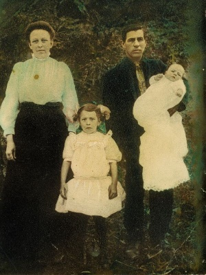

George Long
of Blount TN and Cherokee NC
Research note:
The parentage of this George Long is unknown. But it appears
he may be the son of William Long of Montgomery NC. Lived in Blount TN
1860 census 2 households away from Henry Long, son of James Long
II of
Burke NC
1. George
Long
born about 1802-5 NC.
married Naomi_________
children:
2. Thomas
E. Long
- born about 1835 NC; birth certificate of son William says his
father was born Georgia. d after 1910, the last time he appeared
in the census.
married Sarah
Johnson between 1850-1855, based on the 1860 & 1900 census.
She was b ca 1836, prob in NC, & d before 1910.
Residences
were:
1850: Thomas in subdivision 25, Polk TN, with parents Geo &
Naoma
1860: Georgia Militia Dist 1027, Fannin, GA
1870: Hiwassee, Clay, NC--no other Longs in this district.
1880: Ivy Hill, Haywood, NC, father Geo 4 pages away.
1900: Jonathan Creek Township, Haywood, NC, 3 doors from son
William Long.
1910: Jonathan's Creek, Haywood, NC, in HH of son Manson Long.
children:
3. George
Thomas Long
- born 1 April 1851 in Georgia; lived Jonathans Creek Haywood
Co NC; Farmer and Minister; died Nov 9 1942 age 91; burial at
Cove Creek Cem on Nov 11, 1942. (source: death certificate. Note:
Dorothy, a primary researcher of this lineage thinks the birthdate
on the death cert must be wrong. Census records seem to make
the early 1851 date a bit too early for common sense. A birth
year of 1858 seems more likely.)
Residences:
1860:Georgia Militia District 1027, Fannin, GA
1870:Hiwassee, Clay, NC
1880: couldn't find him
1900, 1910, 1920 &1930, Jonathan's Creek, Haywood, NC
married Nicie
SMITH, b 1861 in NC, d 1944 in Haywood, NC.
children:
4. Lucinda
LONG,
b 26 Mar 1887 in NC, d 28 Dec 1921 in Haywood, NC. Husband's
last name was WYATT.
4. William
Thomas LONG,
b 25 Sep 1888 in NC, d 23 Jan 1962 in Hickory, Catawba, NC. Married
Josie Evaline OWEN, b ca 1886 in NC. They had 8 children, born
from 1913 to 1927,
4. Thomas
Arvel or Arvel Thomas LONG, b 1 Apr 1892 in NC, d 28 May 1970, in NC. Wife's
name unknown, but he was a widow when he died.
4. Chester
Manson LONG,
b 2 or 3 Apr 1894, Haywood, NC, d 8 Jul 1976, Gaston, NC. Wife
was Allice PHILLIPS,
4. Cumi Toley
LONG,
b 19 Aug 1896 in Haywood NC, d 30 Mar 1968, Haywood, NC. Married
a Messer? Then married George WILLIAMS. Source for this is her
death certificate.
4. Nora Ann
LONG,
b 1 Oct 1902, (Haywood, NC?) d 3 Jul 1969 in Buncombe, NC. m
Homer Thurman HANNAH.
4. Grady M.
LONG,
b ca 1905 in NC.
3. John V(or
D) LONG,
b ca 1853-1856 in GA, resisdence same as father through 1880,
at which time he was 24 years old and still in school. Listed
in 1900 census: Jonathan's Creek, Haywood, NC, in HH of bro Thomas
Long. No record of wife or children, no census records beyond
1900.
3. Frances
M LONG,
b ca 1860, Clay, NC d 26 Jan, 1951, in Cove Creek, Haywood, NC.
Spouse was Wilburn CONRAD, the informant on her death certificate.
3. Thomas
S LONG, b
ca 1863 in NC, d ?--
Residences:
1880-Thos with parents in Ivy Hill, Haywood, NC
1900: with wife and children in Jonathan's Creek, Haywood, NC.
Bro John same HH, bro Manson next pg, father and bro Wm 6 pages
away. Couldn't find any record after 1900.
married Lena
J. _______ about 1891; she was b Jan 1867 in NC.
Children: (listed in the 1900 census)
4. William
T LONG,
b Nov 1893 NC
4. Lillie
LONG,
b Dec 1895 NC
4. James LONG, b Jan 1898 NC
4. Everett
LONG,
b Feb 1900 NC
4. Children
after 1900?
3. William
Andrew Long
- born 14 November 1864 in Haywood Co NC; lived Cove Creek, Haywood
Co NC; Farmer; died December 25, 1937 at Jonathans Creek, Haywood
Co NC; buried Cove Creek Cem. NC on Dec 26 1837; (source: death
certificate)
Residences:
1880: Ivy Hill, Haywood, NC, Wm in parent's HH.
1900: with wife and family in Jonathan's Creek, Haywood, NC.
1910: Spartansburg, SC
1920: couldn't find them
1930: Jonathan's Creek, Haywood, NC
married Cynthia
Jane MESSER, about 1887; she was born 13 Oct 1869 NC,d 12 Feb
1950 Orange, NC. (There are many variations for the spelling
of Cynthia's name, apparently she was called "Syntha").
Children:
4. Bertie LONG (female) b 18 Dec 1888 NC, d Sep 1976 in
Rockingham, Richmond, NC. m Henry Hardin PRICE b 1885, Fines
Creek, Haywood, NC. d 9 Apr 1951, Haywood, Nc 12 children
4. Gilmer V LONG, b14 Jul 1891, NC, d 28 Oct,1964
Waynesville, Haywood, NC. m Lilly Jenkins, b 1890 in NC at least
4 children.
4. Lawrence Showalter LONG, b 8 Jul 1893 Haywood, NC-
d 19 Jun 1971, Haywood, NC, buried Cove Creek Cemetery ca 1910
m Zena MESSER, b 28 Oct 1889 Haywood, NC--d 5 Jun 1921, Haywood,
NC. 3 children ca 1922 m 2nd wife, Elsie_________b ca 1906 --
at least 1 child
4. Noble Guy LONG, b 26 Mar 1896 Haywood, NC d Jul 1978
Gaffney, Cherokee, SC. m Ora Elizabeth Silver, b 24 Dec 1898,
d 22 Aug 1940,
Cherokee, SC
4. Cuba Alice LONG, b 2 Dec 1898 NC, d 12 Feb 1976 Buncombe,
NC m Raymond Jackson HUMPHRIES, b 30 Jul 1896 in Cowpens/Blacksburg,
SC. Cuba was admitted to a mental hospital sometime before the
1930 census, and at least one of her younger children, Elizabeth
Jane, was adopted at that time. Elizabeth's adoptive parents
were Riley Allen and Polly DAVIS. (Thanks to Debbie in NC for
this info) Cuba had rejoined her husband by the early 1940's
when he completed his draft registration card. At that time they
were living in VA.
4. Dewey L LONG, b 8 May 1901 NC, d 9 May 1955, Union,
SC m Annie__________
4. Lofton LONG, b ca 1904 NC
4. Annie B LONG, b 1908 NC
4. Ned Columbus LONG, b 24 Jul 1910, Cove Creek, Haywood,
NC d 27 Jun 1985, Waynesville, Haywood, NC m Mattie ____________.
2. Green D. B. Long - born about 1837 NC. Lived next to
Drury Long in 1860 Fannin GA census. Lived Cheoah, Graham Co
NC in 1880
married Easter
Barker in Blount TN 1858
children:
3. Margarett
Long
born about 1861 TN
3. George
Long
born about 1865 TN
3. Noah Long
born
about 1869 NC
3. Josaphine
Long
born about 1872
3. Betty Long
born
about 1874
3. Julia Long born about 1877
3. James B. Long born about 1879
2. Martha
A. E. Long
born about 1840 GA married William Henry Skiinner
gr-gr grandmother
of researcher Dorothy donf247 (at) aol.com

Nathaniel
Skinner (and family) son of Martha Long, about 1911
2. Roxanna
C Long
- born about 1844 GA
2. Eliza E.
Long
- born about 1844 GA
2. Betsy S.
Long
- born about 1850 TN
Census
Locations For George Long and Family
1850 - Polk
TN age 45
1860 - Blount
TN age 55
1870 - Cherokee
NC 62
1880 - Haywood
Co NC - family in Graham NC (formed 1872 from Cherokee County)
Family
Researchers
Dorothy donf247
(at) aol.com
|